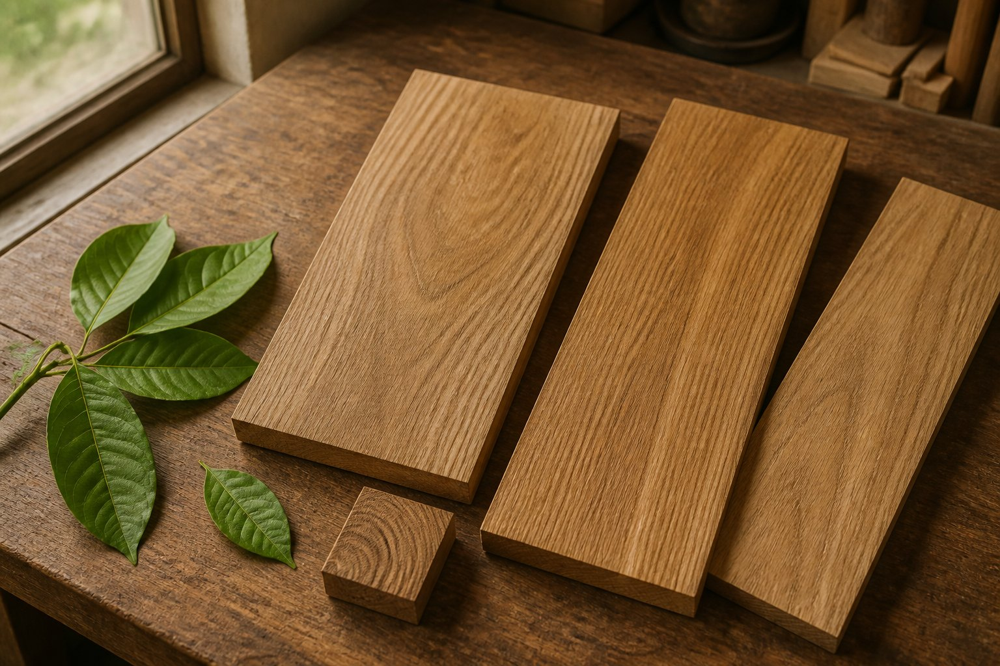

Article
什么是柚木
从材质、触感、稳定性和生活场景开始，重新认识这种常被放进地板、家具和户外空间里的木材。

先把柚木当成一种生活材料
很多人第一次听到柚木，脑子里先出现的是“贵”“耐用”或“户外家具”。这些印象不算错，但如果只停在标签上，很容易忽略真正影响体验的部分：它的油性感、纹理密度、稳定表现，以及在不同空间里呈现出的温润感。
柚木常被用于地板、家具、船用木作和户外空间，与它的天然油脂和相对稳定的材性有关。用在家庭空间时，可以具体看脚感、开裂风险、维护频率和颜色变化。
不要只看颜色和名字
同样叫柚木，实际差异可能很大。产地、树龄、取材部位、规格、干燥处理和表面工艺，都会改变最终产品的表现。只看一张偏金黄的图片，或者只听一个“柚木”的名字，并不能判断它是否适合自己的空间。
更稳的方式，是把柚木放回使用场景里看。地板要关心规格、基层、安装和维护；茶室要关心触感、尺度和氛围；户外家具要关心结构、五金、排水和清洁。材料本身重要，材料进入生活后的状态同样重要。
柚木常进入哪些空间
在室内，柚木经常出现在地板、墙面、柜体、茶桌、边几和收纳家具里。它能让空间多一点沉稳的木质秩序，但并不意味着越多越好。整屋使用时，需要考虑色调、光线、软装和其他木材之间的关系。
在户外，柚木更常见于庭院桌椅、露台家具、户外地面和休闲区。户外环境比室内复杂，阳光、雨水、温差和清洁习惯都会改变木材状态。因此户外柚木不应只看外观，更要看结构和维护建议。
判断要点
看柚木时，可以先问四件事：它用在哪里，规格和结构是什么，表面怎么处理，后续怎么维护。只要这四个问题讲不清，所谓材质优势就很难落到真实生活里。
柚木不是万能材料，也不是所有家庭都必须选择。它更适合那些愿意接受天然木材变化、重视触感和长期使用感的人。理解这一点，比单纯追求“是不是柚木”更有价值。
简短小结
认识柚木，可以从一句话开始：它是一种适合长期使用和空间表达的木材，但真正的价值要放进具体产品、具体空间和具体服务里判断。
本文为基础阅读，不替代具体产品说明、合同条款或第三方检测材料。